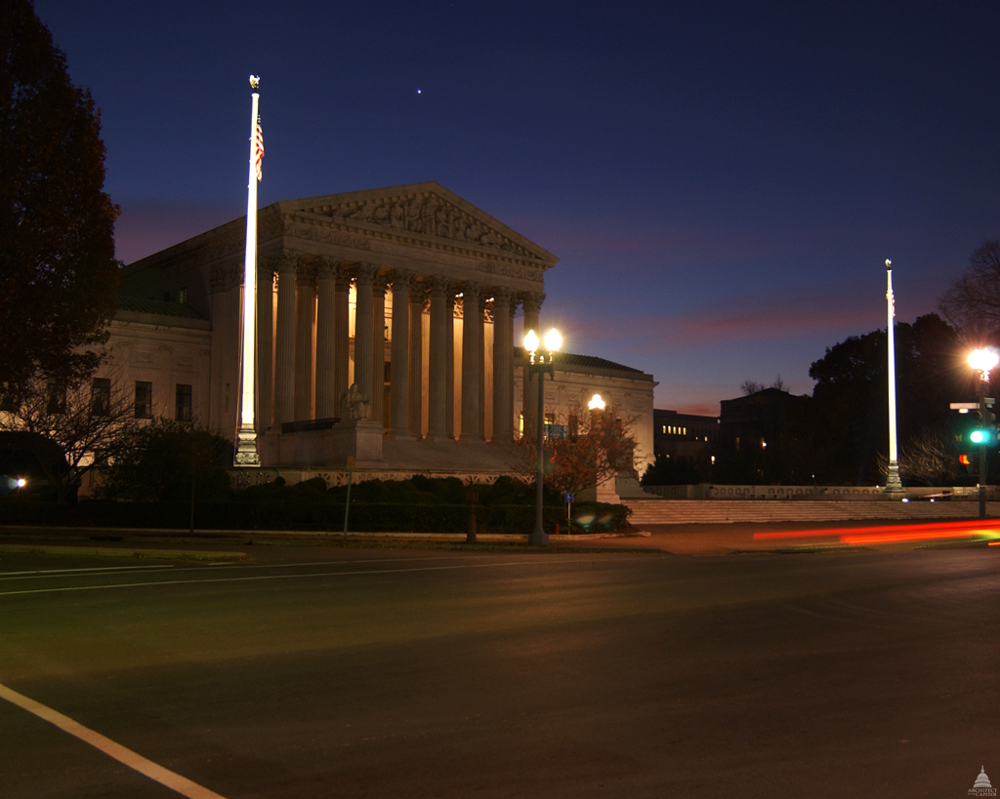

Directions: Work through the five stations in order. Each station is one move in an argument that ran from 1954 to 1958. At each station, record what the document claims, what it leaves open, and what it answers. At the end, complete the argument chain and judge the delay. Stations 1 through 4 are verbatim documents with cuts marked by ellipses and disclosed in the Source lines. Station 5 is labeled a summary on its face.
Source: U.S. Supreme Court, Brown v. Board of Education, 347 U.S. 483 (1954), opinion of Chief Justice Warren (Justia transcription of U.S. Reports), as recorded in the audited TPSP record. Cuts are marked with ellipses.
To separate them from others of similar age and qualifications solely because of their race generates a feeling of inferiority as to their status in the community that may affect their hearts and minds in a way unlikely ever to be undone.
We conclude that, in the field of public education, the doctrine of "separate but equal" has no place. Separate educational facilities are inherently unequal. Therefore, we hold that the plaintiffs and others similarly situated for whom the actions have been brought are, by reason of the segregation complained of, deprived of the equal protection of the laws guaranteed by the Fourteenth Amendment.
What harm does the opinion say separation itself does, in its own words, and why does that harm not depend on equal buildings or books?
State the holding exactly: what is inherently unequal, and which amendment does the holding rest on?
Source: U.S. Supreme Court, Brown v. Board of Education II, 349 U.S. 294 (1955) (Cornell Legal Information Institute), as recorded in the audited TPSP record. Cuts are marked with ellipses.
While giving weight to these public and private considerations, the courts will require that the defendants make a prompt and reasonable start toward full compliance with our May 17, 1954, ruling. Once such a start has been made, the courts may find that additional time is necessary to carry out the ruling in an effective manner. The burden rests upon the defendants to establish that such time is necessary in the public interest and is consistent with good faith compliance at the earliest practicable date.
... The judgments below, except that in the Delaware case, are accordingly reversed and the cases are remanded to the District Courts to take such proceedings and enter such orders and decrees consistent with this opinion as are necessary and proper to admit to public schools on a racially nondiscriminatory basis with all deliberate speed the parties to these cases.
What must school boards do at once, and what may district courts allow them afterward? Name the burden the opinion places on the boards.
Find the closing phrase of the order. What deadline, if any, does the phrase itself contain?
Source: Southern Members of Congress, Declaration of Constitutional Principles (the Southern Manifesto), 1956 (Congressional Record, via University of Maryland Global Campus), as recorded in the audited TPSP record. Cuts are marked with ellipses. The declaration was signed by 101 southern members of Congress.
We regard the decision of the Supreme Court in the school cases as a clear abuse of judicial power. It climaxes a trend in the Federal judiciary undertaking to legislate, in derogation of the authority of Congress, and to encroach upon the reserved rights of the States and the people. [...] We reaffirm our reliance on the Constitution as the fundamental law of the land. We decry the Supreme Court's encroachments on rights reserved to the States and to the people, contrary to established law and to the Constitution.
We commend the motives of those States which have declared the intention to resist forced integration by any lawful means. ...
We pledge ourselves to use all lawful means to bring about a reversal of this decision which is contrary to the Constitution and to prevent the use of force in its implementation.
What charge does the declaration lay against the Court, and whose rights does it say the Court has encroached upon?
The signers pledge and commend resistance by lawful means. What work does the word lawful do in this document?
Source: U.S. Supreme Court, Cooper v. Aaron, 358 U.S. 1 (1958) (U.S. Reports, via Library of Congress), as recorded in the audited TPSP record. Cuts are marked with ellipses.
In short, the constitutional rights of children not to be discriminated against in school admission on grounds of race or color declared by this Court in the Brown case can neither be nullified openly and directly by state legislators or state executive or judicial officers, nor nullified indirectly by them through evasive schemes for segregation whether attempted "ingeniously or ingenuously.
It follows that the interpretation of the Fourteenth Amendment enunciated by this Court in the Brown case is the supreme law of the land, and Art. VI of the Constitution makes it of binding effect on the States "any Thing in the Constitution or Laws of any State to the Contrary notwithstanding.
Arkansas officials had claimed they were not bound by Brown. Trace the opinion's answer in order: the article it starts from, the 1803 case it cites, and the conclusion it draws about Brown.
The opinion closes off two routes to nullification. Name both, using its adverbs.
Source: Summary of the record, prepared for this lesson, from the facts stated in Griffin v. County School Board of Prince Edward County, 377 U.S. 218 (1964) (U.S. Reports). This station is a summary, not a verbatim document.

Prince Edward County, Virginia was one of the districts joined in Brown, through the Davis case brought after Black students struck for better school facilities in 1951. In June 1959 a federal appeals court directed that the county admit students without regard to race, beginning with the school term that September. The county board of supervisors, which controlled school money, refused to levy school taxes for 1959 and 1960, stating that it faced a court decree requiring the admission of white and colored children to all the schools of the county without regard to race or color. The public schools did not reopen in the fall of 1959. A private group, the Prince Edward School Foundation, operated private schools for white children from that fall onward, aided at first by state tuition grants. No private school for Black children was established in the county, and Black children were without formal education in the county from 1959 until 1963, when classes for Black and white children were conducted in county owned school buildings under a cooperative arrangement. About 1,700 Black children were shut out of schooling during the closing. In Griffin in 1964 the Supreme Court ordered the district court to require the supervisors to levy taxes to maintain public schools operated on the same terms as in other Virginia counties.
Who closed the schools, by what mechanism, and what reason did the supervisors state for acting?
Compare the provision made for white children and for Black children during the closing, and state the result the Supreme Court ordered in 1964.
Complete the chain. Use short entries drawn from the stations, in the order the argument ran.
| Move in the argument | What the document says | What it left open or answered |
|---|---|---|
| 1954: what the Court claimed | ||
| 1955: what it declined to order | ||
| 1956 to 1959: what the resistance built | ||
| 1958: what the Court answered |
Judge the delay. Was the time between the holding of 1954 and the schools of 1964 the price of a unanimous decision, or a separate failure that followed it? Write a short paragraph using evidence from at least two stations.
What harm does separation itself do? In the opinion's words, to separate children from others of similar age and qualifications solely because of their race generates a feeling of inferiority as to their status in the community that may affect their hearts and minds in a way unlikely ever to be undone. The harm is therefore in the state enforced separation itself, which is read as a statement of inferiority. Equal buildings, books, or salaries cannot remove it, because the injury is the separation and its meaning, not the facilities.
State the holding. In the field of public education the doctrine of separate but equal has no place; separate educational facilities are inherently unequal. The plaintiffs are therefore deprived of the equal protection of the laws guaranteed by the Fourteenth Amendment.
What must boards do at once, and what may courts allow? District courts will require the defendants to make a prompt and reasonable start toward full compliance with the ruling of May 17, 1954. Once such a start has been made, the courts may find that additional time is necessary to carry out the ruling in an effective manner. The burden rests on the defendants to establish that such time is necessary in the public interest and is consistent with good faith compliance at the earliest practicable date.
What deadline does the closing phrase contain? None. The order directs the district courts to admit the parties to public schools on a racially nondiscriminatory basis with all deliberate speed. Deliberate can mean careful and slow as well as considered, and speed carries no date. Students should be pressed on the gap between the burden language, which sounds strict, and the closing phrase, which is what officials quoted.
What charge, and whose rights? The declaration calls the school decisions a clear abuse of judicial power, part of a trend in the federal judiciary undertaking to legislate, in derogation of the authority of Congress, and encroaching on rights reserved to the States and to the people, contrary to established law and to the Constitution.
What work does lawful do? It lets the signers commend states that declared their intention to resist forced integration by any lawful means and pledge themselves to use all lawful means to reverse the decision, while keeping the document inside a claim of constitutional fidelity. The word is the document's discipline and its limit at once: it commits Congress's southern delegation to reversal as a program, and it concedes, on paper, that force is not among the means. Later closings and evasions were defended under the same word.
Trace the answer in order. Article VI of the Constitution makes the Constitution the supreme Law of the Land. In Marbury v. Madison (1803) Chief Justice Marshall declared that it is emphatically the province and duty of the judicial department to say what the law is, a principle the opinion calls a permanent and indispensable feature of the constitutional system. It follows that the interpretation of the Fourteenth Amendment enunciated in Brown is the supreme law of the land, binding on the states notwithstanding anything in a state constitution or law, and every state officer is committed by oath under Article VI to support it.
Two routes closed. The constitutional rights declared in Brown can neither be nullified openly and directly by state legislators or state executive or judicial officers, nor nullified indirectly by them through evasive schemes for segregation, whether attempted ingeniously or ingenuously.
Who closed the schools, by what mechanism, on what stated reason? The Prince Edward County board of supervisors, which controlled school appropriations, refused to levy school taxes for 1959 and 1960 after a federal court directed admission without regard to race for the term beginning September 1959. The supervisors stated that they were confronted with a court decree requiring the admission of white and colored children to all the schools of the county without regard to race or color. The school board itself was left without funds to operate.
Compare the provision, and state the 1964 result. A private foundation operated schools for white children from the fall of 1959, aided at first by state tuition grants, while no private school for Black children was established in the county and Black children were without formal education there from 1959 to 1963, about 1,700 children shut out in all. In Griffin v. County School Board of Prince Edward County (1964) the Supreme Court ordered the district court to require the supervisors to levy taxes and maintain public schools on the same terms as the schools of other Virginia counties, and the public schools reopened that fall.
Chain, expected entries. 1954: the Court claimed that separate educational facilities are inherently unequal and that school segregation denies the equal protection of the laws; it left enforcement entirely open, restoring the cases for argument on relief. 1955: it declined to order a date, requiring a prompt and reasonable start under district court supervision and ordering admission with all deliberate speed. 1956 to 1959: the resistance built a legal program in the open space, the Manifesto's pledge of reversal by lawful means, placement laws, tuition grants, and in Prince Edward County the closing of the public schools themselves. 1958: the Court answered that its reading of the Fourteenth Amendment is the supreme law of the land, binding on state officers by oath, and that Brown rights can be nullified neither openly nor indirectly. Closing paragraphs earn full credit for either verdict argued from the stations. The price of unanimity answer notes that Warren held nine justices together in 1954 and again in 1958 by keeping the 1954 opinion short, moral, and free of an enforcement order, and that the same restraint produced Brown II. The separate failure answer notes that the burden and good faith language in Brown II gave district courts tools they largely declined to use for a decade, so the delay was administered, not merely inherited. Strong answers concede the other side's best fact before answering it.